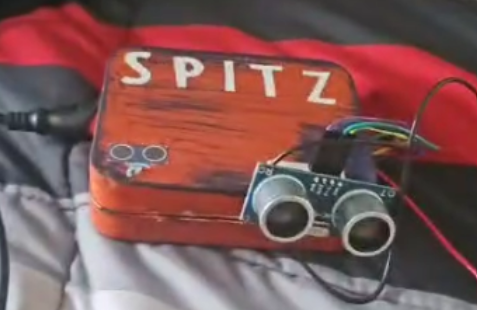
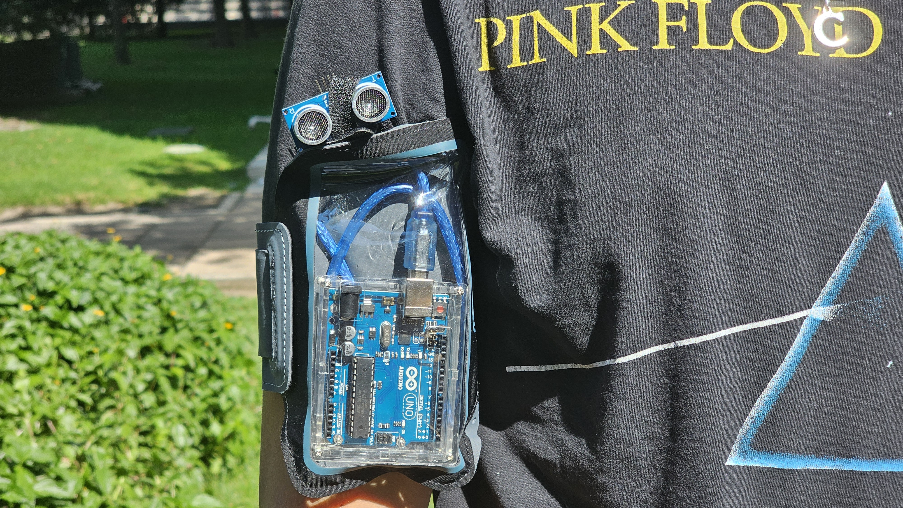
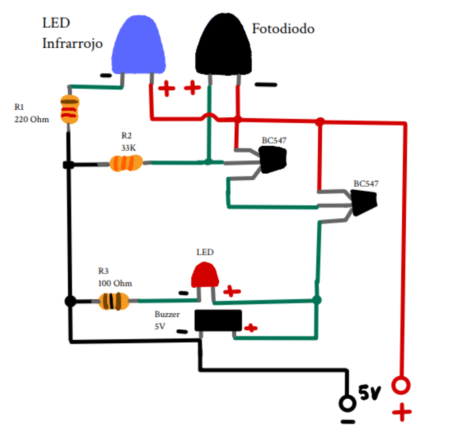

Primer Prototipo
Era una placa de Arduino pegada a una caja de metal, donde el arduino era preotejido. De ahí salía el sensor ultrasonico HC-SR04. Funcionaba, practicamente, y era lo que mas importaba.

Perico
El modelo principal, un sensor pegado en el brazo con velco, el cual contiene el sensor ultrasonico HC-SR04 asomandose para poder avisarle al portador acerca de cosas a la cercanía de 4 metros

Periquito
Periquito es nuestra versión más simple y económica del proyecto, cumpliendo con la principal función, aletar al usuario sobre algun riesgo miediante vibraciones. Periquito no cuesta más de 10 pesos mexicanos